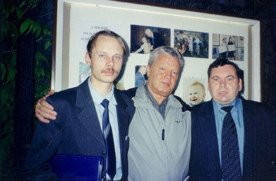
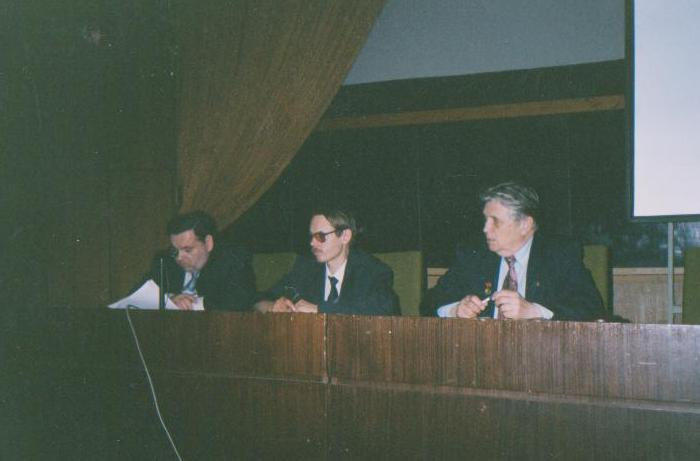
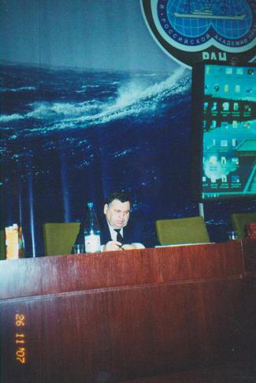
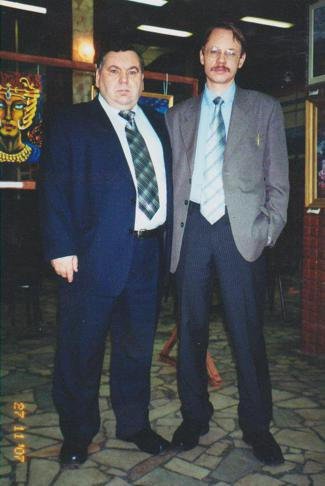
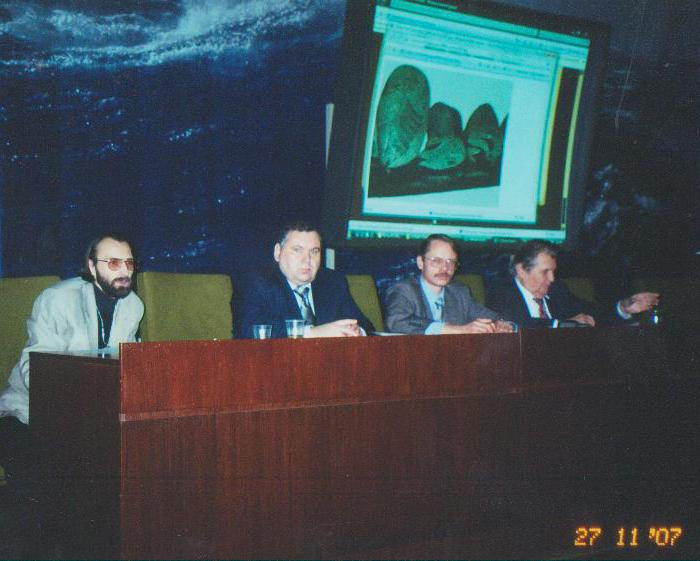
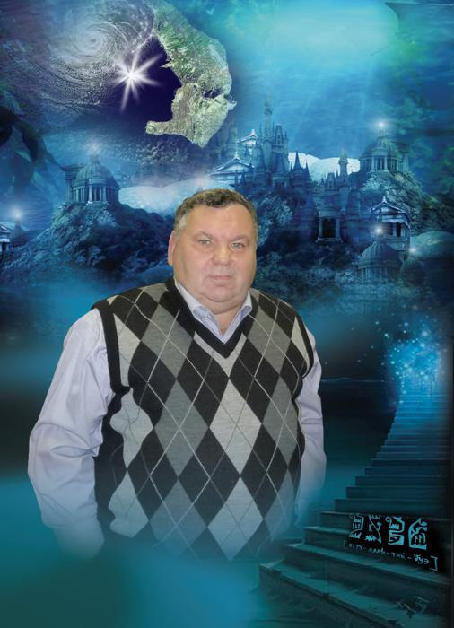

РУССКОЕ ОБЩЕСТВО ПО ИЗУЧЕНИЮ ПРОБЛЕМ АТЛАНТИДЫ (РОИПА)
В начале 1990-х гг. в Москве впервые возникло сообщество единомышленников, занимающихся проблемой Атлантиды и другими древними допотопными, мифическими цивилизациями, чье существование ставится под сомнение исторической наукой. В основании его стояли известные писатели и ученые: Владимир Иванович Щербаков, Александр Петрович Казанцев, Николай Николаевич Непомнящий, Александр Моисеевич Городницкий, Алим Иванович Войцеховский, Игорь Александрович Резанов, главный редактор газеты «Мастер» Геннадий Васильевич Максимович, писатель-судомоделист Михаил Аполлинарьевич Михайлов и член Союза журналистов гор. Москвы Александр Александрович Воронин.
РОИПА было основано 27 апреля 2003 г. А.А. Ворониным, В.И. Щербаковым, А.И. Войцеховским и Г.В. Нефедьевым. С момента своего основания РОИПА развернуло активную научно-исследовательскую работу по поиску исторических свидетельств и артефактов, подтверждающих факт существования великих працивилизаций прошлого.
22 мая 2003 г. в Москве в помещении Института океанологии РАН им. П. П. Ширшова был проведен Второй Российский съезд атлантологов, посвященный 100-летию со дня рождения выдающегося российского атлантолога и ученого Николая Феодосьевича Жирова.
26-27 ноября 2007 г. в помещении Института океанологии РАН им. П. П. Ширшова собрался большой форум, который объединил известных российских ученых и исследователей со всей России и стран СНГ – Третий Российский съезд атлантологов.
6-го ноября 2012 г. безвременно ушел из жизни президент РОИПА Александр Александрович Воронин. Новым президентом Общества стал Георгий Владимирович Нефедьев.

Г.В. Нефедьев, В.И. Щербаков, А.А. Воронин. Центральный Дом журналиста. 2002 г.

Второй Российский съезд атлантологов. Москва, 22 мая 2003 г. Институт океанологии им. П. П. Ширшова.
Слева направо: А.А. Воронин, Г.В. Нефедьев, А.И. Войцеховский

А. А. Воронин
Третий Российский съезд артлантологов

А. А. Воронин, Г. В. Нефедьев
Третий Российский съезд артлантологов

А. А. Алмистов, А. А. Воронин, Г. В. Нефедьев, А. И. Войцеховский
Третий Российский съезд артлантологов

А.А. Воронин. Фотоколаж.
Автор Эстэра Улитина
Приоритетными задачами РОИПА являются:
- Изучение и поиски Атлантиды, а также всего комплекса древних працивилизаций, истории их возникновения, развития и исчезновения;
- Создание корректной, новой концепции глобального исторического процесса, реконструкция подлинной истории человечества;
- Создание и развитие на базе междисциплинарных исследований науки атлантологии и включение ее в круг академических научных дисциплин;
- Создание Музея Атлантиды им. Н. Ф. Жирова для сохранения мирового и российского атлантологического наследия.
Дополнительная информация
С 2012 г. РОИПА совместно с издательским домом «Вече» приступает к изданию нового иллюстративного Альманаха о тайнах древних цивилизаций «Кронос», посвященный по преимуществу Атлантиде и другим працивилизациям.
РОИПА ведет активную поисковую и исследовательскую работу, готовит и проводит различные мероприятия, как научного, так и популяризаторского, просветительского характера.
Фондом было организовано в различные части света экспедиции по поиску остатков древнейших культур и 練武цивилизаций. В ходе этих экспедиций были исследованы интересные с точки зрения атлантологии географические точки планеты: Азорские и Канарские острова, Понапе, Йонагуни, Перу, Боливия, Греция, Крит, Мальта, Египет, Мексика, Босния, Эфиопия, Кольский полуостров, о. Пасхи и др.